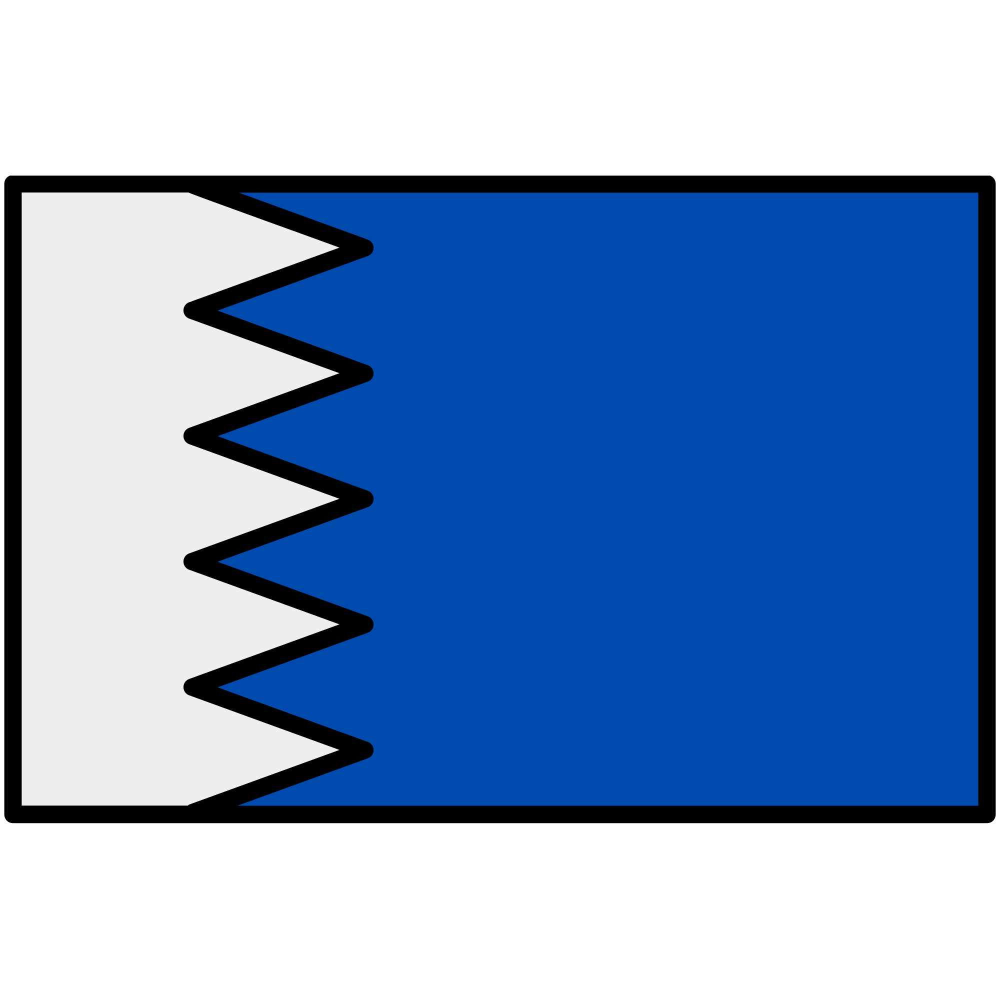
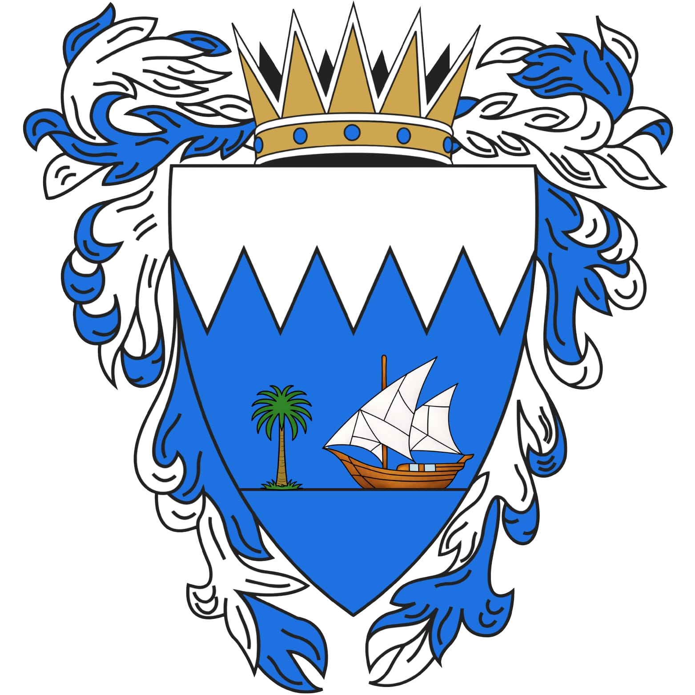

The national symbols of Moeezland reflect its identity as a secular, coastal Emirate — a heritage built on the sea, trade, and the authority of the Crown, expressed through the national flag and the coat of arms.

The flag of Moeezland features a white band on the hoist side, separated from the main blue field by a serrated line of five white triangles. The design closely follows the traditional Gulf flag format, distinguished by its use of blue in place of red.
The five triangles echo the five points of the crown featured in the national coat of arms, visually linking the flag to the wider set of national symbols, while also evoking the coastline and waves along Moeezland's shores. As Moeezland is a secular state, the triangles carry no religious meaning.
The blue field represents the sea, stability, and loyalty, reflecting Moeezland's maritime character, while the white band stands for peace.

The coat of arms of Moeezland is topped by a gold crown, signifying the sovereignty of the Emir as Head of State, and framed by flowing blue-and-white mantling that reflects the national colors.
The shield itself is divided by a jagged, wave-like partition line, representing the coastline and the sea that shapes Moeezland's history. Its upper field is white, symbolizing peace, while the lower fields are blue, representing the surrounding waters.
At the center of the shield, a traditional dhow sailing ship and a palm tree stand side by side. The dhow represents Moeezland's seafaring heritage and its history of maritime trade, while the palm tree symbolizes resilience, growth, and the sustenance of the land. Together, they capture a nation shaped equally by land and sea.
Help us improve Moeezland eGov services.